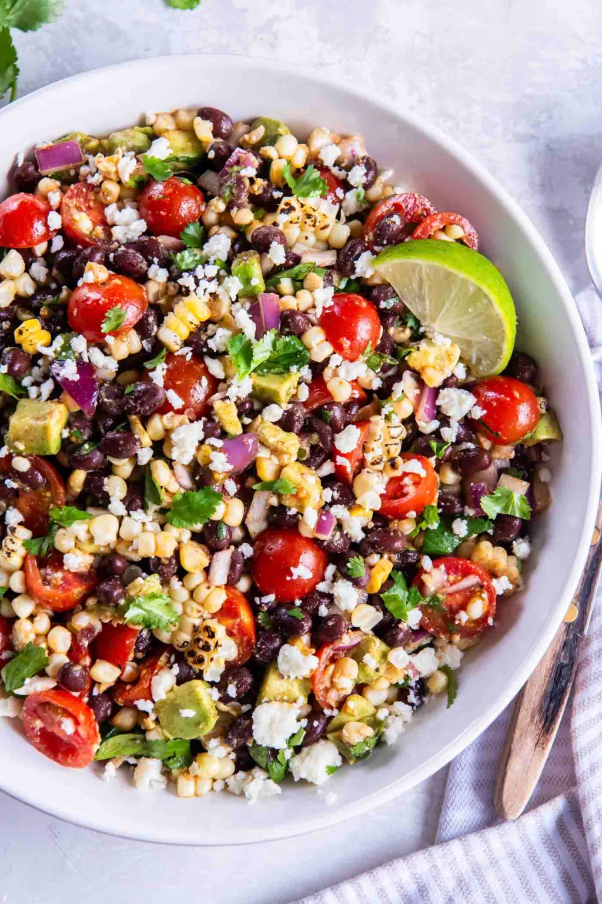

Summer Grilled Corn Salad
Ingredients
Instructions
- Grill the corn until lightly charred. Allow it to cool, then cut the kernels off the cob.
- In a large bowl, combine the corn kernels, red bell pepper, red onion, and cilantro.
- In a small bowl, whisk together lime juice, olive oil, salt, and pepper. Pour over the salad and toss to coat.
- Chill the salad for 30 minutes before serving.